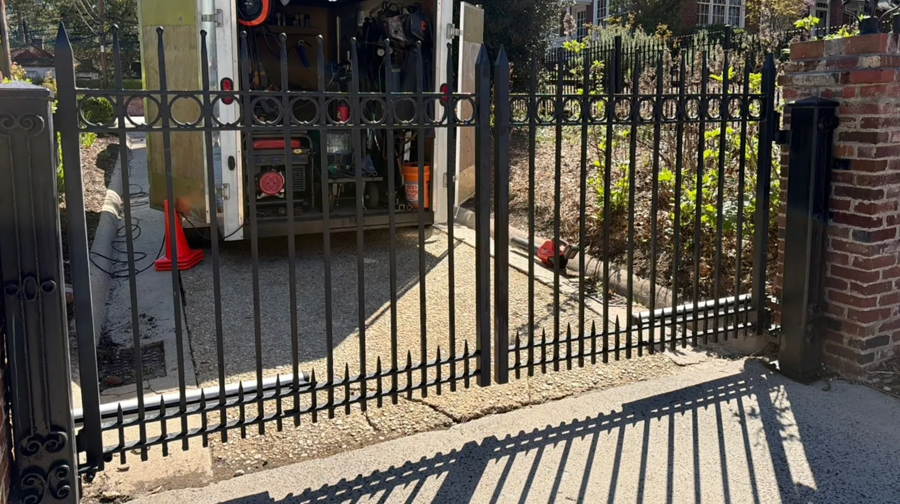

Reviews
74 reviews. All five stars.
What Augusta customers say about Augusta Weld Works on Google, quoted word for word.
5.0/5
From 74 Google reviews. Topics customers mention most:
Mobile weldingTimelinessSolid weldMetal repairsQuick workMailbox repairAttention to detailQuality of workCraftsmanshipEase of use
In their words
Ten reviews. One verdict.
Reviews are shown exactly as written on Google, spelling included.
Just picked up my Honda 70 there for some frame welds that were completed same day. Have previously taken the bike for other frame welds that have held up nicely. He does excellent work, is very responsive in communication, and will always attempt to offer same-day service. Brock is personable, offers great customer service, and stands behind any of his work.
Brock did a wonderful repair on my trailer landing gear. He was fast same day and reasonably priced. The welds were better than factory OEM.
Brock welded back together a support bar on my cast iron bench. He did a great job for a great price. My wife could not be any more pleased. Brick was very personable and easy to adjust scheduling with. Great for any type of welding work would recommend
I had some physical damage occur on the side rail of my mega ramps on my gooseneck trailer that needed to be repaired and came across this local business in the process. After speaking with Brock over the phone, he came out the next day and took care of my trailer! He did a fantastic job, price was very reasonable and he was very professional! Highly recommend this company!
My mower deck started to get some stress cracks as well as an idler puller mount broke off. I called Brock at Augusta Weld Works and he took care of it timely and professionally. He worked me into his schedule while also accommodating mine. Augusta Weld Works will be my first call next time I need anything welded. Also worth noting he does do mobile service which is a plus.
Came to Brock to get a ladder rack built onto my trailer, he not only took my vision of what I want but exceeding my expectations on the overall outcome. I will definitely be working with him again and will recommend for anyone looking for wielding.
Brock was timely in getting back to my call. He was innovative on how to go about out my repair on my enclosed trailer. He was a pleasure to work with and was fair in his pricing. If I have any further needs with my trailer I will reach back out to him and would definitely recommend him to others as well. Thank you Brock
I broke tailgate on my utility trailer and took it to Brock. He repaired my trailer in very timely manner and educated me how it should have welded I initially. This young man was extremely professional and very good at his craft. He will definitely get my business in the future.
I needed new hinges on the gate of my utility trailer. I took the trailer to Brock and he did the job in a timely and professional manner at a fair price. I am very pleased with his work. Brock will be my go to when I need welding services again. Nice guy and great service.
I had a trailer gate that needed multiple spots welded back with supports. Within only a few hours it was repaired and looking better than new! Very friendly and would definitely recommend!

Call or text the shop
Add your project to the list.
Call the shop and tell them what needs welding.
(706) 550-5298